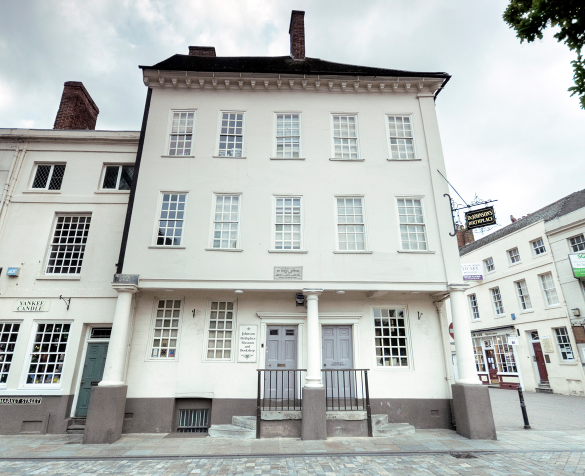

Breadmarket Street, Lichfield, Staffordshire — Johnson’s birthplace. The author’s father Michael built the house, in which he ran the family’s bookshop on the ground floor, facing on to the market square. The building now operates as a museum dedicated to the famous author.